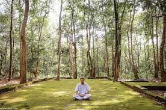

Meditation is a practice where an individual uses a technique – such as mindfulness, or focusing the mind on a particular object, thought, or activity – to train attention and awareness, and achieve a mentally clear and emotionally calm and stable state.

"Here, I would like to introduce you to meditation in the forest or in the “wild”. I avoided the word outdoors, because outdoors can be in any park anywhere in the world. And no, I mean meditation in an “unmanicured” place, the “raw” outdoors. By “raw” I think about forests, whether small woodlands in a city or huge forests in the mountains."